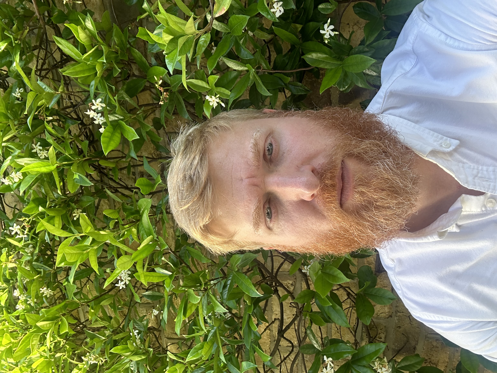

Author’s Note
I have spent a great deal of time thinking about theoretical physics and philosophy— reading, watching, and reflecting on the nature of existence.
Over the past few years, I have developed this paper gradually as an independent researcher with an academic background in the medical sciences. Although I am far removed from the world of professional physics, I believe that curiosity, logical discipline, and reductionist reasoning can reveal insights that sometimes lie outside established institutional perspectives.
In this work I propose a quantum–geometric model of the universe that aims to unify quantum mechanics and gravitation, address the cosmological constant problem, and describe both the origin and cyclic renewal of the cosmos within a single, self-consistent framework.
About the Author

Joshua Owide is an independent researcher with a background in the medical sciences. His work focuses on foundational questions in physics, geometry, and cosmology, particularly the relationship between symmetry, curvature, and quantum structure.
His research explores the geometric foundations of physical law and proposes a unifying framework grounded in first principles and structural coherence.